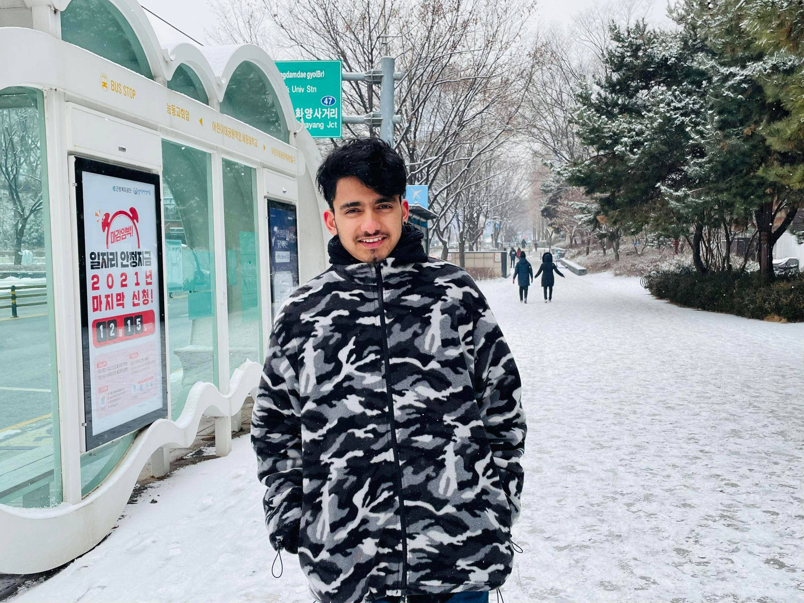
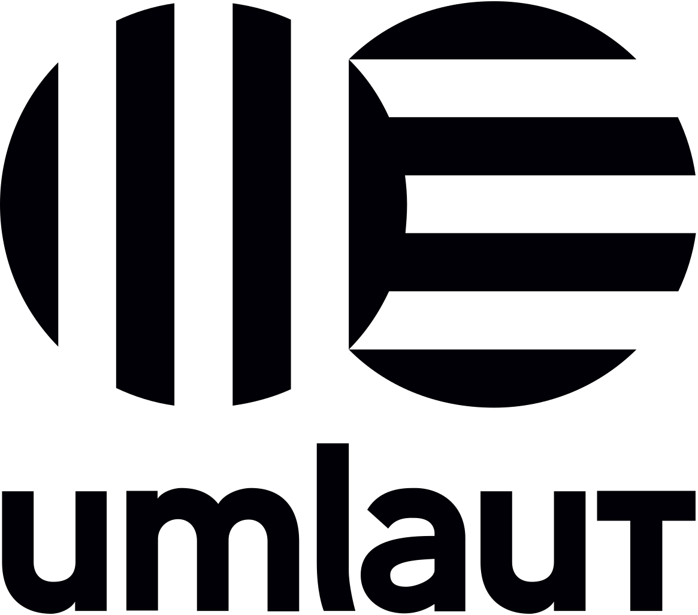
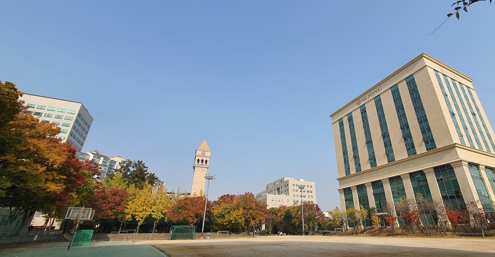
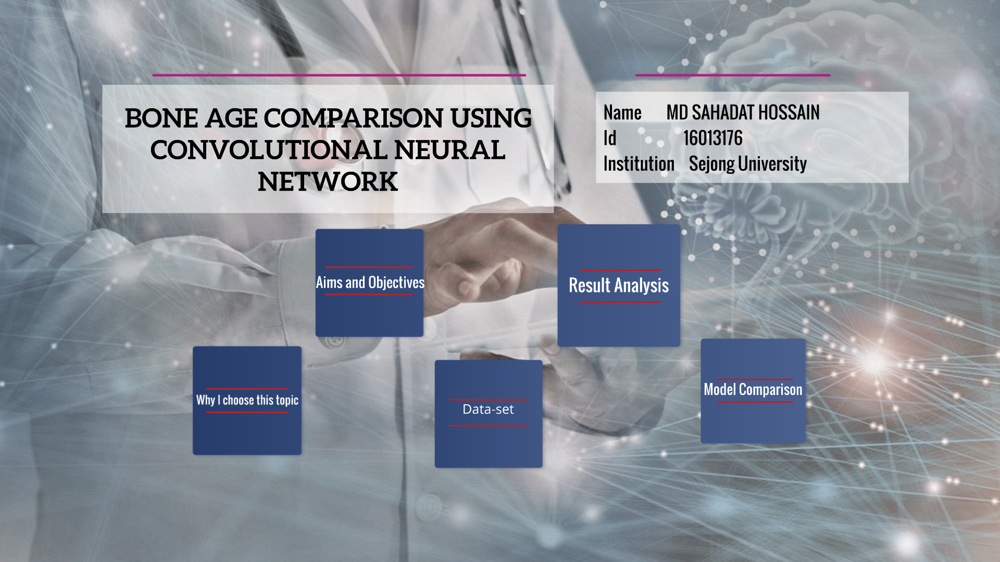
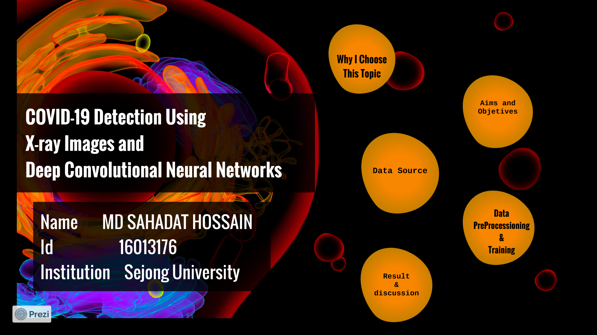
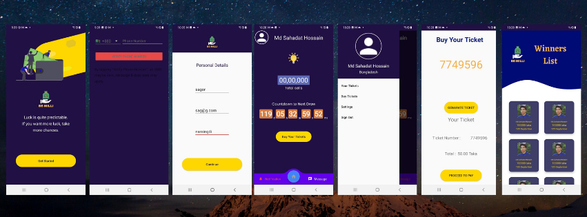
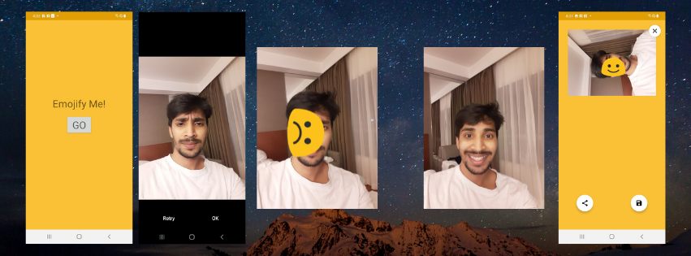

About Me

I’m a computer engineer Gautam, Seoul with a passion for updated technology, AI technology, mobile application and autonomus car technology. .
I'mExperienced Test Engineer with a demonstrated history of working in the information technology and services industry. Skilled in Python (Programming Language), Communication, jQuery,js, react, django ,ML, and Teamwork. Strong engineering professional with a Bachelor's degree focused in Computer Science from Sejong University.
I am always enthusiastic about new technology and trends. I like travelling, hiking, cycling and meeting new cultures and people. I share ideas and observations about the future of work, education,I share ideas and observations about the future of work, education and views on LinkedIn (feel free to add me as a connection).
Work

Umlaut
Telematics Test Engineer(Remote) | January 2022- Current
- Automotive HMI, feature, system, Bluetooth, cellular, telematics, infotainment, or component communication testing using CANoe
email : gautam.bohara@umlaut.com
Find more details about Umlaut
Vision PS GmbH
Test Engineer(Remote) | October 2021- December 2021
- Collecting logs data samples from latest Android phones and providing to the TE
- Daily Reporting, Tracking, Planning to management regarding activity acquisition
- Daily Reporting, Tracking, Planning to management regarding activity acquisition
- Provided 1st level troubleshooting support
- Performing mobility in different cities in South Korea
- Quality assurance for different terminal (Devices)/li>
- Performing all kind of testing such UAT, Mobility etc.
- Performing all kind of testing such UAT, Mobility etc.
- Organizing complete logistic for the project with help of technical lead
email : g.bohara@vision-ps.com
Find more details about Vision Ps Gmbh
Here is the experience Certificates and License
Vision PS GmbH
Measurement Engineer | February 2021- September 2021
- Mobile Network Benchmark Testing (South Korea)
- Collecting large amount of voice & data samples using TEMS Paragon 5
- Daily Reporting, Tracking, Planning to management regarding activity acquisition
- Provided 1st level troubleshooting support
- Responsible for complete setup of the cars and hardware including Antennas
- Quality assurance for complete project
- Direct communication with customer
email : g.bohara@vision-ps.com
Find more details about Vision Ps Gmbh
Here is the experience Certificates and License

Sejong University
Bachelor of Science in Computer Engineering
- Sejong University International Scholarship
- Data Structure & Algorithm, Software Engineering, Web & Mobile Programming, Artificial Intelligence, Human-Computer Interaction
Projects

Bone Age Detection and Comparison Using Different Convolutional Neural Network
In this Project I Converted the digital images into a dataset for building training and pre-training models.
I applied 4 pre-trained Convolutional Neural Network (CNN) models to predict a child age and making a comparative analysis between 4 models(VGG-16, INCEPTION V3, MOBILENET, RESNET-50).
Analyzing reasons why performance varies between models having tested with the same data set .
For more click here

COVID-19 Detection Using X-ray Images and Deep Convolutional Neural Networks
In this Project I Converted the digital images into a dataset for building training and pre-training models.
I applied 2 pre-trained Convolutional Neural Network (CNN) models to predict covid-19 from x-ray images.
For more click here
Korean Language Learning Website
In this Project I used Html, Css, Bootstrap, Mysql, Firebase .
For details click here

Sentiment and trending topic analysis
In this Project I used twitter api,Neural Network and Levenshtein distance,Bag-of-Words model.
For details click here

Online lotto App(Android)
In this Project I used Java as a primary programming language,used different libraries and for backend I used Firebase.
This app including registration, phone authentication, user progile, countdown timer, ticket number generation, winner list
For source code click here

Udacity course project Emojify me(Android)
In this Project I implemented android vision library to detect face and select emoji..
For source code click here
Contact Me
- Gautam Bohara
- 506 Gunja Building, Gunja-ro, Gwangjin-gu, Seoul, South Korea
- Email: gautambohara591@gmail.com
- Phone Number : +8201051358723